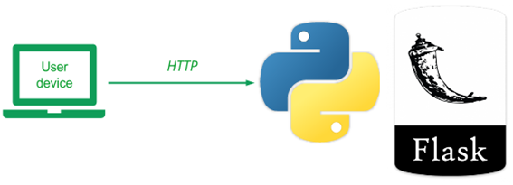
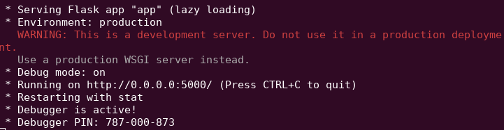
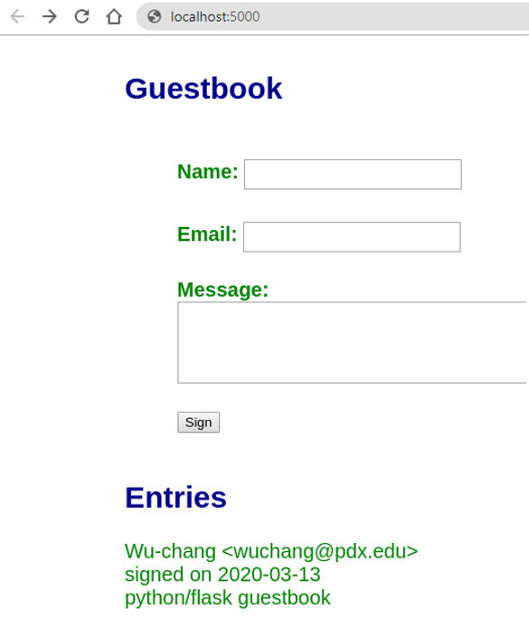

We will be using a simple guestbook application to show you a range of computing and database systems and how they operate. The application adopts a model-view-controller (MVC) architecture initially in order to allow us to separate the data backend being used (model) from the HTML user interface (view), and the application logic (controller). The Guestbook will be implemented via Python and its Flask web framework.
To begin with, use RDP to connect to your Linux VM, clone the repository and change into the directory containing the code.
git clone https://github.com/wu4f/cs430-src cd cs430-src/01_mvc_pylist
This is the simplest version and has a file directory structure shown below (including the descriptions of what each file does).
.
├── app.py # Controller
├── Model.py # Model (abstract base)
├── model_pylist.py # Model (Python list implementation)
├── requirements.txt # List of python packages needed
├── static
| └── style.css # View (stylesheet)
└── templates
├── index.html # View (Index view)
└── layout.html # View (abstract base)
We will start with the model code. We wish to support arbitrary backend databases, yet we do not want to re-implement all of our application code whenever a new backend database is used. The beauty of an MVC-style architecture is that the separation of concerns allows you to support this. Towards this end, the Model.py code below defines a simple abstract interface for two operations on a backend database. The select() returns all rows of the database as a list of lists where each row contains a name, email, date, and message for a guestbook entry. The insert() takes a name, email, and message, then generates a date, before inserting all four into the database.
class Model():
def select(self):
"""
Gets all rows from the database as a list of lists.
Row consists of name, email, date, and message.
:return: List of lists containing all rows of database
"""
pass
def insert(self, name, email, message):
"""
Inserts entry into database
:param name: String
:param email: String
:param message: String
:return: none
:raises: Database errors on connection and insertion
"""
passOur database backends will be derived from this abstract model, but hide the implementation of the database backend from the application. As long as any of our derived models supports the calling interface above, they will work with the application.
We start with a simple model implemented as an in-memory Python list. As this model is stored in program memory, it will be destroyed when we terminate our application. We will be replacing this model with a persistent database backend later. As the code in model_pylist.py shows, the model class is derived from the abstract Model. Its constructor sets the guestentries attribute as a blank list and each insert() appends a list containing the row information it is passed along with a generated timestamp (via date.today()). The select() simply returns the guestentries attribute.
from datetime import date
from Model import Model
class model(Model):
def __init__(self):
self.guestentries = []
def select(self):
"""
Returns guestentries list of lists
Each list in guestentries contains: name, email, date, message
:return: List of lists
"""
return self.guestentries
def insert(self, name, email, message):
"""
Appends a new list of values representing new message into guestentries
:param name: String
:param email: String
:param message: String
:return: True
"""
params = [name, email, date.today(), message]
self.guestentries.append(params)
return TrueThe controller code is in app.py. The code instantiates the application via the Flask package and the model backend via the code shown in the prior step. It then registers two routes for the application. The first route is the default page for viewing the guestbook. This route creates a list of dictionaries where each dictionary is generated from one of the rows in the entries returned from model.select(). This list is then passed to Flask's render_template which will take the Jinja HTML template specified (index.html) and use the data in entries to render the final HTML returned to the client.
from flask import Flask, redirect, request, url_for, render_template
from model_pylist import model
app = Flask(__name__) # our Flask app
model = model()
@app.route('/')
def index():
entries = [dict(name=row[0], email=row[1], signed_on=row[2], message=row[3] ) for row in model.select()]
return render_template('index.html', entries=entries)The second route is to handle form submissions via HTTP POST requests. After pulling the form parameters out of the request via Flask, model.insert() is called to add them to the backend database (e.g. the Python list). The application then redirects the client back to the first route. Finally, the last part of the application runs the application if it is being called using the Python on port 5000.
@app.route('/sign', methods=['POST'])
def sign():
"""
Accepts POST requests, and processes the form;
Redirect to index when completed.
"""
model.insert(request.form['name'], request.form['email'], request.form['message'])
return redirect(url_for('index'))
if __name__ == '__main__':
app.run(host='0.0.0.0', port=5000, debug=True)The view consists of two Jinja2 templates. The first, templates/layout.html, serves as a "base" template for all derived templates. This standardizes the layout of all pages. As the template shows, all pages the title "My Visitors" and the same style sheet, which will be filled in by Jinja2 as the generated URL for the stylesheet in static/style.css. The template contains a single page that specifies a block called content. This block will be defined in a derived template.
<html>
<title>My Visitors</title>
<link rel=stylesheet type=text/css href="{{ url_for('static', filename='style.css') }}">
<div class=page>
{% block content %}{% endblock %}
</div>
</html>The second Jinja2 template templates/index.html is derived from the base above. It contains the form for submitting a new entry via the sign route. It also outputs each entry it has been given. Recall that it was given a list of dictionaries. The for loop goes through each dictionary in the list, outputting the name, e-mail, date, and message.
{% extends "layout.html" %}
{% block content %}
<h2>Guestbook</h2>
<form action="{{ url_for('sign') }}" method=post>
<p class="heading">Name: <input type=text name=name></p>
<p class="heading">Email: <input type=text name=email></p>
<p class="heading">Message:
<textarea rows=5 cols=50 name=message></textarea></p>
<p><input type=submit value=Sign></p>
</form>
<h2>Entries</h2>
{% for entry in entries %}
<p class=entry>
{{ entry.name }} <{{ entry.email }}>
<br>signed on {{ entry.signed_on }}<br>
{{ entry.message }}
</p>
{% endfor %}
{% endblock %}We will now run our guestbook application on the VM. First install the packages needed to support the use of Python and its Flask package by performing:
sudo apt update
sudo apt install python3-dev build-essential python3-venv -yWithin the directory containing the application, create a Python 3 virtual environment. This allows us to install custom Python packages specifically for our application without modifying the system's version of Python. After creating the environment, activate it. Note that you must always activate the environment whenever you wish to run the application with its installed packages.
virtualenv -p python3 env source env/bin/activate
By convention with Python applications, a list of packages to install for an application is given in a file called requirements.txt. Viewing this file shows us that the application uses flask for handling web requests. To install the packages, we'll run pip and point it to this file.
pip install -r requirements.txt
Finally, we'll run the application
python app.py
You should see the following:

This is Python's development web server. It's meant for testing. As the UI shows, the server is running on port 5000 and is listening to connections on all interfaces (e.g. 0.0.0.0). Launch a browser and visit the site running via http://localhost:5000

Then, view the requests that show up in the terminal running the server. Within the terminal, type "Ctrl+c" to stop it.